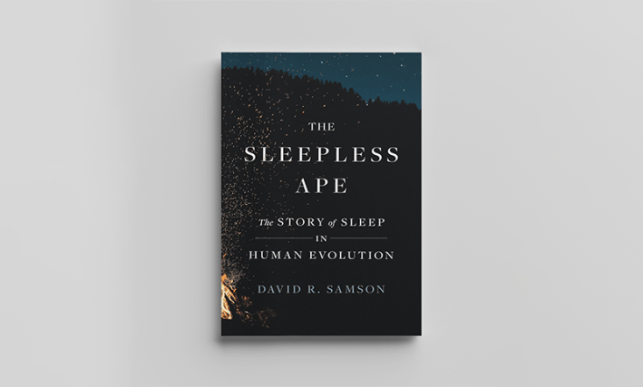
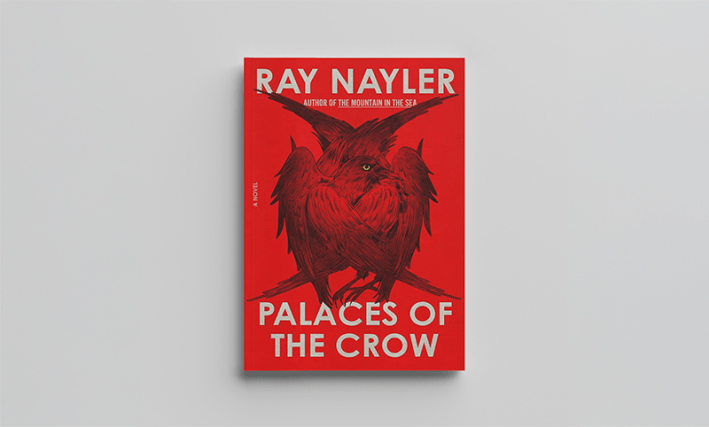
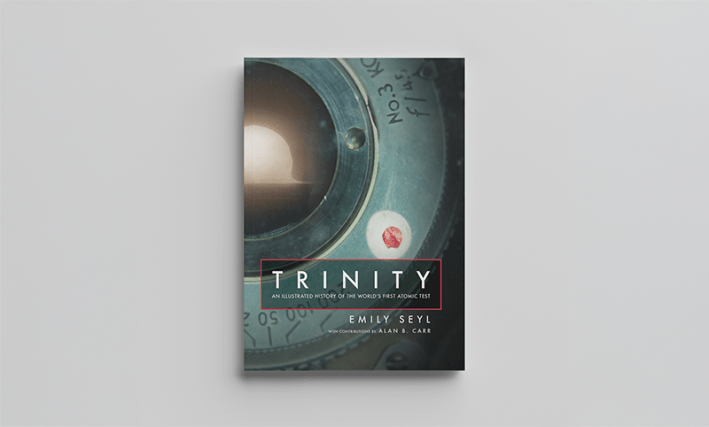
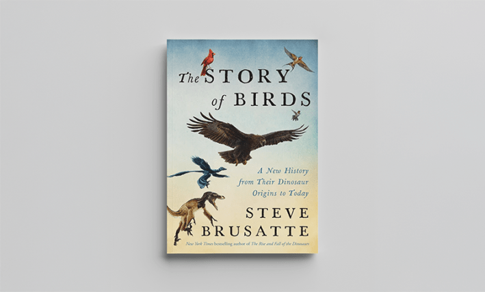
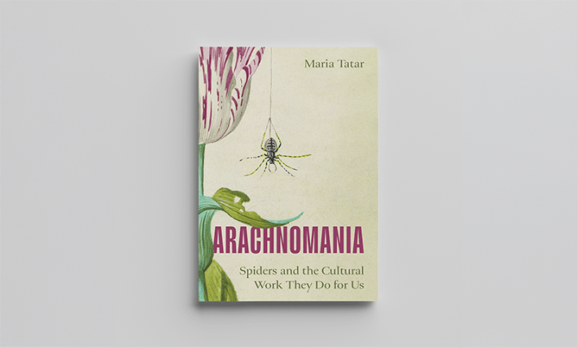
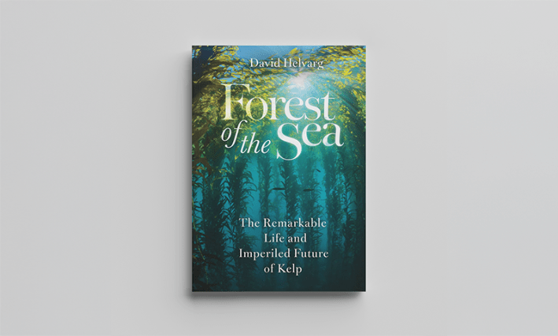

Can quantum physics explain who you are? What’s wrong with having an AI bestie? What secrets does a terraformed colony on a distant exoplanet hold? These are some of the questions tackled in these science and science-fiction books, all fresh from the presses this month. This is your invitation to visit underwater forests, withstand an attack by a seagull, and witness the first nuclear test.
This is by no means an exhaustive list; there are, of course, many other books being published this May. But since there are so many new books coming out each month, we thought we’d give you a hand, and flag a few that we’re especially interested in.
So here, without further delay, are 10 books published in May 2026 we’re excited about.
The Sleepless Ape: The Story of Sleep in Human Evolution By David Samson

Princeton University Press
I find myself fascinated by any books about sleeping (perhaps because I so often cannot), and this one is no exception. Author David Samson takes us back to the era when our ancestors left the safety of the forest canopy for more dangerous ground, and uses the tale of our evolution to explain some of the lingering mysteries of sleep, from why humans sleep less than other primates to how we can hack our evolution for better sleep today.
Entangled States: A Life According to Quantum Physics By Karmela Padavic-Callaghan
Penguin Random House
This book weaves quantum physics and personal identity together to tell the story of a life. Science writer Karmela Padavic-Callaghan uses each chapter to examine a moment in their history through the lens of physics. From building a life in a new country to being nonbinary in a field dominated by cisgender, heterosexual men to their thoughts on cause, effect, future, and destiny.
Palaces of the Crow By Ray Nayler

Macmillan Publishers
Ray Nayler, Hugo and Locus winning author of The Mountain in the Sea, is back again, this time with a speculative novel about a Jewish girl who has befriended a murder of crows, an underage Polish soldier who has deserted the Red Army, a Roma horse trader, and an abandoned boy who can’t speak. Set in 1941 as the German blitzkrieg tears across Europe, the book follows as the four are driven into the forest, where their survival hinges, partly, upon the behavior of the crows, which may be more than they appear.
Trinity: An Illustrated History of the World’s First Atomic Test By Emily Seyl

The University of Chicago Press
Featuring hundreds of carefully restored photographs, still frames, maps, and once-top-secret documents, this book is a visual journey through the very first atomic test, codenamed Trinity, that was conducted in the New Mexico desert in 1945. The stunning imagery paints a vivid picture of an emerging and destructive technology and the very human experience of bringing it into being.
Artificially Yours: Real Friendship in a World of Chatbots By Valerie Tiberius
Princeton University Press
Is friendship with a chatbot as good as friendship with an actual person? This is the question at the heart of Valerie Tiberius’ Artificially Yours. She explores whether there is something special about human relationships that AI will never be able to replicate—no matter how good it gets at mimicking us.
The Story of Birds: A New History from Their Dinosaur Origins to the Present By Steve Brusatte

HarperCollins Publishers
What’s not to love about a book that opens with a seagull attack? Granted, this assault seems to have been provoked, and it gives us a window into the life of a mother gull. The book goes on to trace the evolution of modern-day birds, going all the way back to when they were dinosaurs.
The Last Contract of Isako By Fonda Lee
Hachette Book Group
A terraformed colony with a secret, a murder mystery, a world where retirement means death. This epic, dystopian, science-fiction novel has it all. Famed samurai Isako plans to “retire”—walking into the wilderness to her death—when she’s thrust back into the world by a mystery, the answer to which could change humanity’s very existence among the stars. This is the first adult sci-fi novel from Fonda Lee, award-winning author of the modern fantasy classic Jade City trilogy, and we’re here for it.
Arachnomania: Spiders and the Cultural Work They Do for Us By Maria Tatar

Princeton University Press
From the femme fatale to trickster or creator gods, almost every culture has at least a few spider myths. There’s something about the combination of horror and beauty that fascinates us, and that’s what Maria Tatar explores in this book. She explores our cultural fascination with these creatures, and our fraught relationship with them.
The Echoing Universe: How Radio Astronomy Helps Us See the Invisible Cosmos By Emma Chapman
Hachette Book Group
We can solve many of the outstanding mysteries in the universe, if we only listen. Far from a soundless vacuum, everything in space, from moons to stars to maybe even extraterrestrial life, sends out signals. Radio astronomy has already revealed exoplanets and an invisible type of star. Author Emma Chapman tunes us in to the boundless possibilities of what radio astronomy might uncover next, as the technology continues to improve.
Forest of the Sea: The Remarkable Life and Imperiled Future of Kelp By David Helvarg

Princeton University Press
Kelp forests are massive, vital underwater ecosystems. Unfortunately, they grow in cold coastal waters, so they don’t get the same attention as, say, coral reefs, which are very visible to vacationing humans. Even more unfortunately, kelp forests are also threatened by warming ocean waters. In this new book, author (and scuba diver) David Helvarg talks to Indigenous leaders, out-of-work urchin fisherman, documentary filmmakers, and ocean scientists, all of whom are trying to find ways to protect kelp forests, while also promoting the many ways humans can sustainably use the unique ecosystems. 
Lead image: Pixelbuddha Studio and LIGHTFIELD STUDIOS / Adobe Stock